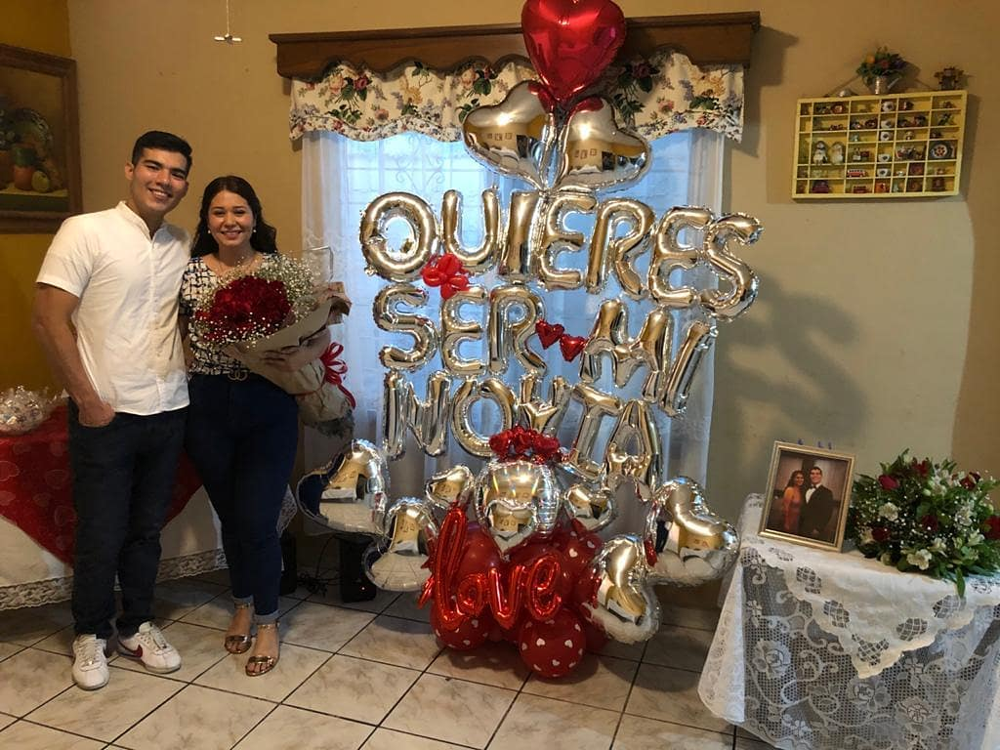
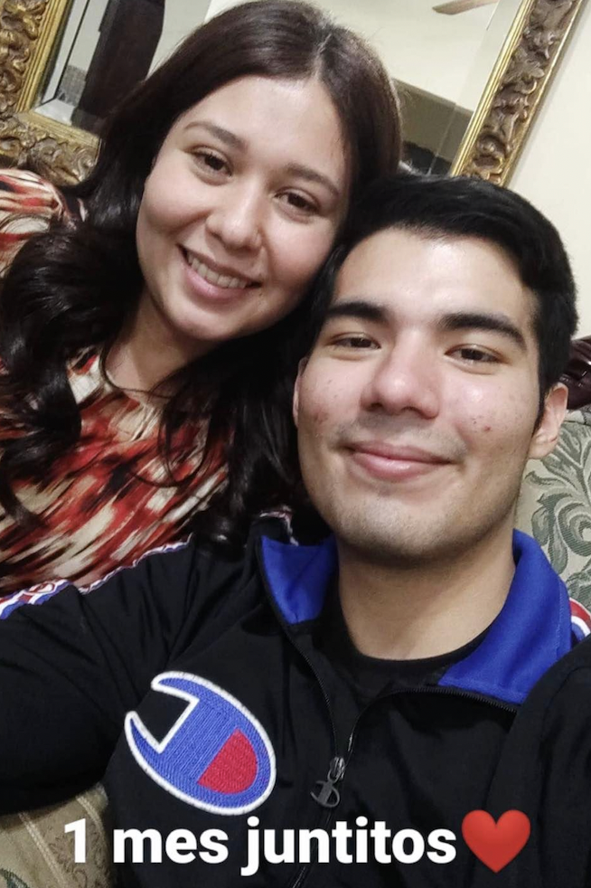
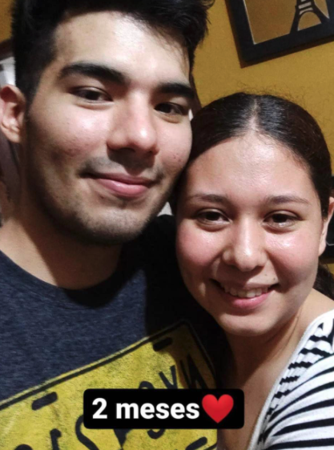
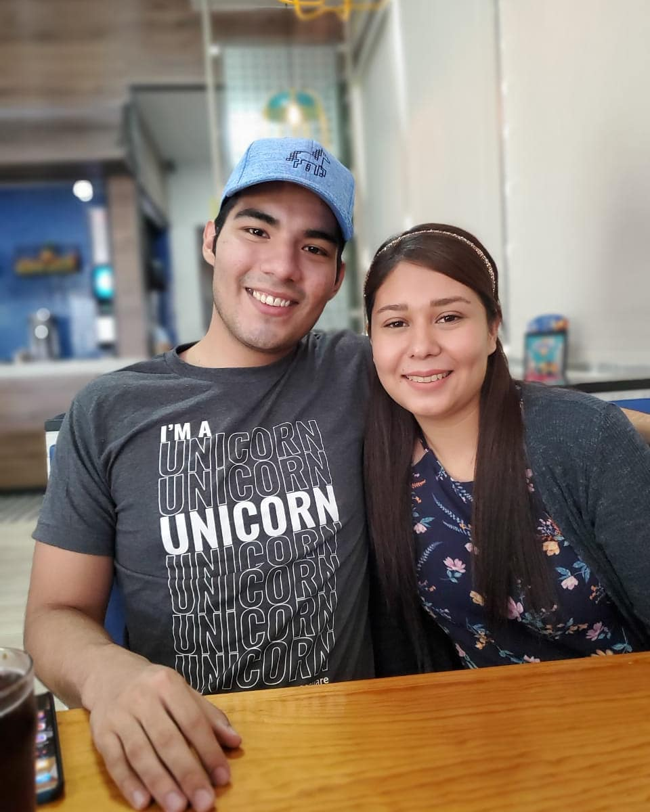
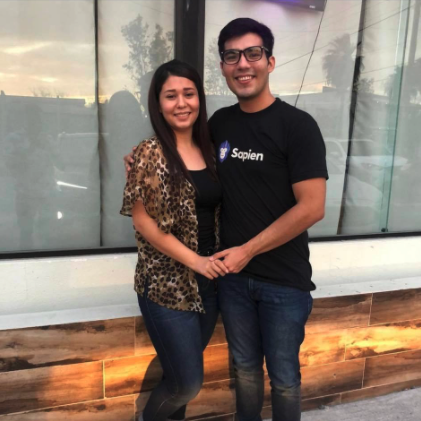
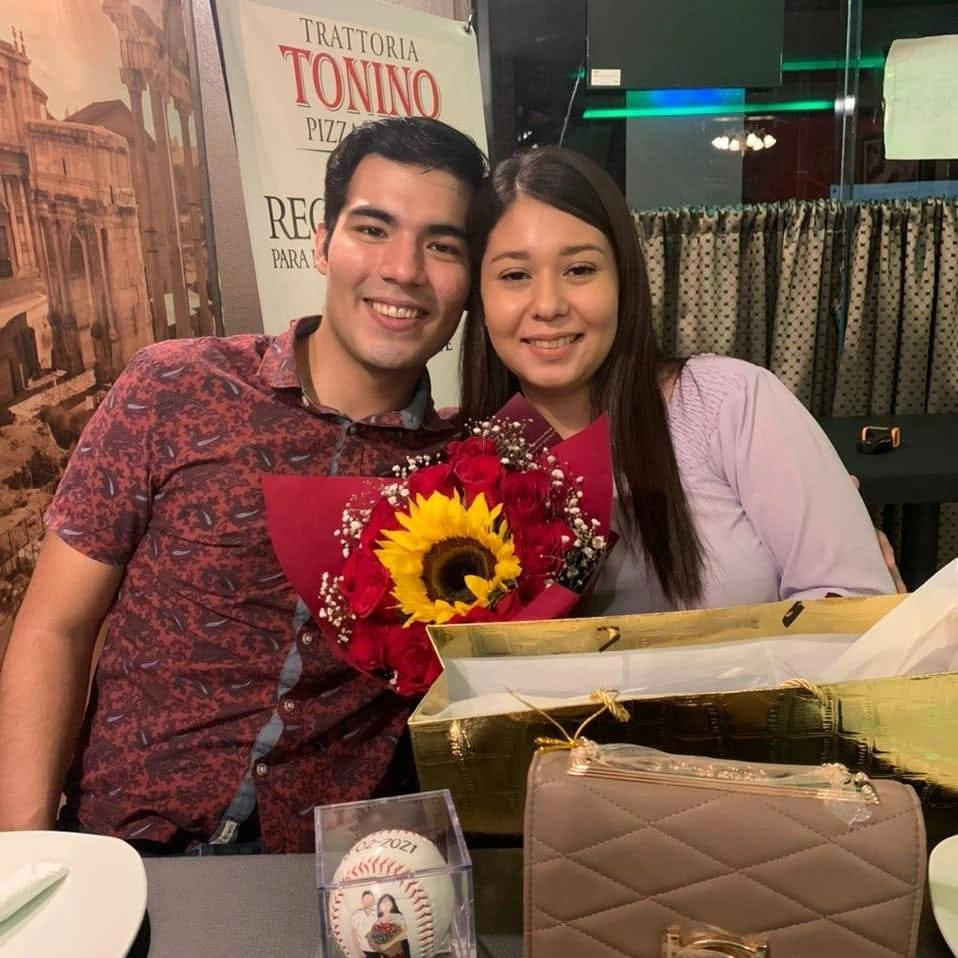
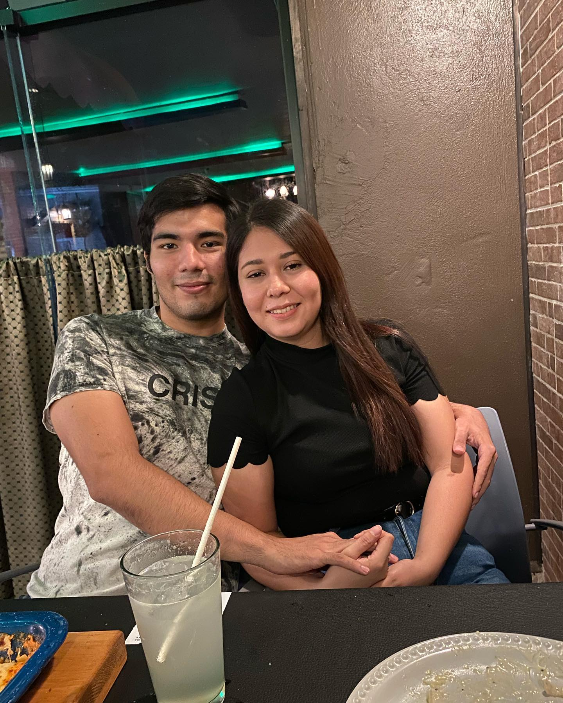
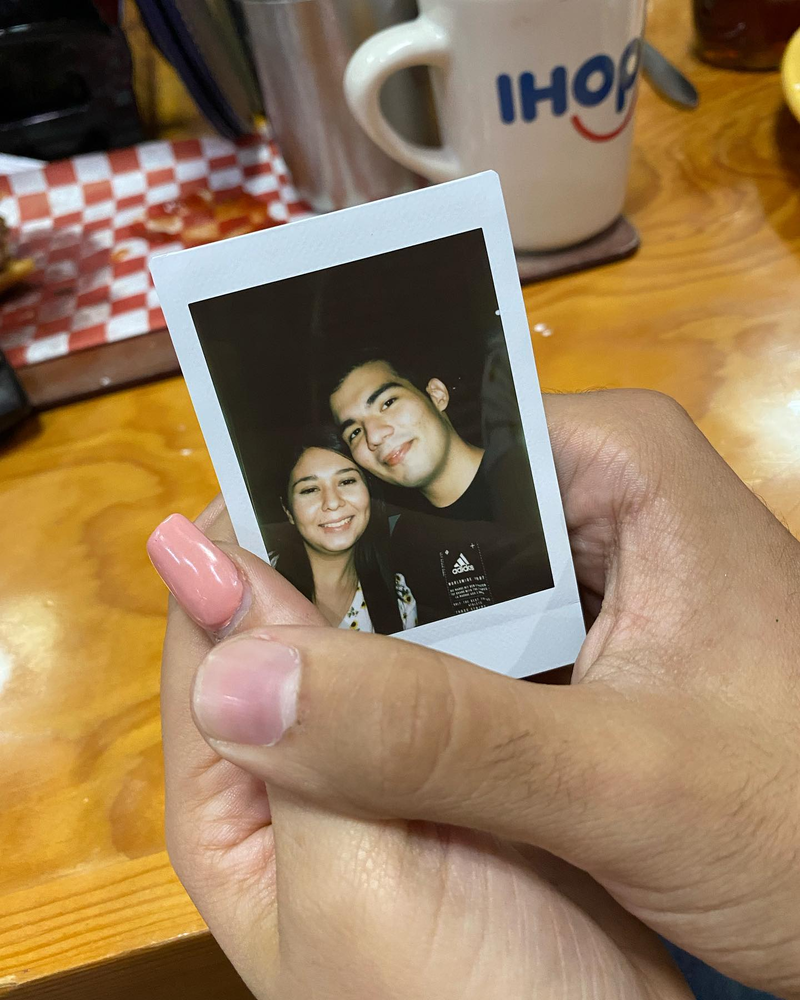
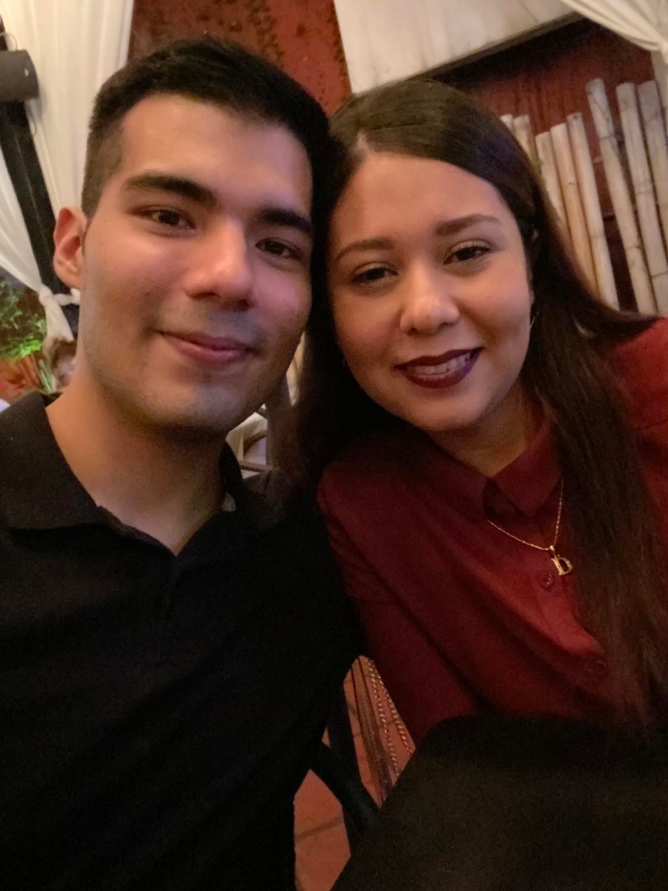

Nuestra relación
El 28 de febrero de 2021, fue el día más feliz y especial en mi vida hasta ahora, fue el día en que formalmente te convertiste en mi novia. Temí muchas cosas, quería que todo fuera perfecto para hacerte saber lo mucho que te amo. Semanas antes había hablado con tu papá con unos nervios que no te das idea, pero fue tan sencillo comenzar a explicarle que yo realmente quería a su hija, que quería dar todo de mi para hacerla feliz y que podía confiar en mí de que así sería. Al verle su sonrisa y darme el si, supe que era hora.
Aquella noche, al ver que todo estaba listo y con todos presentes, comencé a dar vueltas por toda la sala, pensando en todo lo que habíamos pasado y en todo lo que sería si me dieras el sí. Era un mar de nervios, pero de felicidad. El tiempo pasaba, había un silencio por momentos en los que de vez en cuando alguien decía un comentario para empezar alguna plática, pero la mayoría del tiempo fue un silencio con todos sonriendome mientras yo paseaba por toda la sala cabeza abajo preparándome. Y entonces, el momento llegó, Karen solo dijo: “ya llegaron.” Sabía que era hora de por fin decidir ser realmente feliz en mi vida, de hacer formal que yo ya solo quería a una persona y que mi felicidad dependeria enteramente de ella.
Fue todo tan rápido, solo llegaste y me miraste a los ojos. Creo que entendimos lo que sucedía, me diste el SI mi amor. En ese momento fui el hombre más feliz del mundo, y de hecho, ese sentimiento ya nunca cambió. Eras mi novia, y yo tu novio.
Nuestra bella relación, había comenzado:
1 mes
2 meses
3 meses
4 meses
6 meses
7 meses
8 meses
Cada mes, fuimos evolucionando. Nuestra relación se hacía cada vez más fuerte, cada vez era menos verte como mi novia, sino más bien, mi compañera, mi felicidad, mi apoyo en todo, la razón para seguir cada día y no rendirme. Hemos pasado tantas cosas que escribiendo esto recordé cada uno de los bellos momentos que hemos pasado juntos, tantas salidas, tantas personas nos han acompañado, tantas aventuras, un viaje ya juntos (proximamente otro) e incluso detalles menores que tal vez a primera vista no son importantes pero realmente lo son, como cuando platicabamos de nuestro futuro empacando en lives o en casa de tus abuelos. Siempre sosteniendo mi mano, regalándome una sonrisa y haciéndome saber que todo es felicidad cuando estamos juntos.
Justo ahora, mientras escribo esto, me entra un sentimiento, en el que recuerdo todo lo que haces por mi. Todo el amor que me has dado, la increíble mujer que eres, como cuidas a toda persona que amas, como siempre tienes una solución para todo, que nada te tumba, nunca temes los nuevos retos y al contrario los dominas… como siempre haces que todo sea simplemente mejor. Has cambiado mi vida completamente estos meses.
Aunque estas últimas semanas, han sido algo extrañas, siempre has estado ahi, dandome una mano, estando detrás mío, empujándome hacia adelante recordandome quien soy en realidad, viendo mis lágrimas pero dándome siempre abrazos, no me ves como una carga, me ves como un hombre que puede con todo y que aunque está en momentos difíciles tiene un buen corazón después de todo. El hombre que terminaste de ver y aceptaste es finalmente todo lo que soy, bueno y malo, pero que siempre te pondrá en primer lugar en su vida. Es por ello, que sabiendo que las cosas solo van a mejorar después de esto, antes de dormir un dia pensé en algo... Mi querida Diana, mi bello girasolito, me has mostrado que no hay persona como tu en el mundo y que aunque ya te amo, es momento de decirte un secreto.